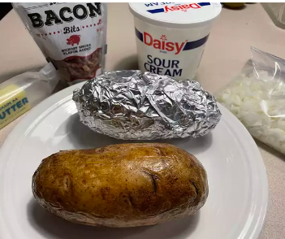

| Prep Time: | Cook Time: | Total Time: |
|---|---|---|
| 1 mins | 1 hr 30 mins | 1 hr 31 mins |
| Servings: | Yield: | |
| 1 | 1 baked potato |
Start off by rinsing and scrubbing the potatoes. Then, pierce each potato with a fork or knife so that steam can escape when baking. Coat the potato with olive oil (you can use your hands to rub it all over the skin or place the potato and oil in a zip-top bag and shake it up) and season with salt.
Bake in a 300 degree F oven until the potatoes are tender and golden brown, about 90 minutes.
Slice the potatoes and fluff the center. Then top with black pepper, butter, Cheddar cheese, chives, sour cream, or anything else you like.
The baking time for baked potatoes will depend on the size of the potatoes. It can take anywhere between 50 minutes and 1 ½ hours. You'll know the baked potato is done when you can stick a fork in the potato and it easily pierces through the skin. If the potato is still hard in the middle, keep baking it for a little longer. When in doubt, pull out your digital thermometer — baked potatoes are done when they have an internal temperature of 210 degrees F.
The 7 Biggest Mistakes You Make When Baking PotatosThe great thing about baked potatoes is that they're so versatile! This means you can top them with as many toppings as you like — or as few as you like (there's nothing wrong with a plain spud). We love to top our baked potatoes with butter, sour cream, chives, cheese, bacon, and even chili. Let your imagination run wild here!
Step 1:
Preheat the oven to 300 degrees F (150 degrees C). Scrub the potato, and pierce the skin several times with a knife or fork. Rub the skin with olive oil, then with salt.
Step 2:
Place the potato in the preheated oven, and bake until slightly soft and golden brown, about 90 minutes. Slice the potato down the center, and serve with butter and black pepper. Sprinkle shredded Cheddar cheese over the top, if desired.
